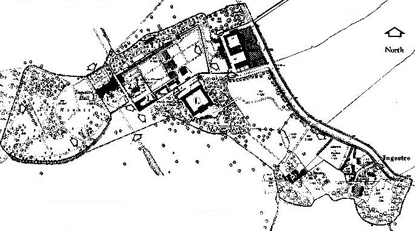

Welcome to Ingestre
Sidebar on the right, content on the left.
Ingestre is a small village about 3 miles east of Stafford, the county town of Staffordshire in England. The village lies on the western side of the valley of the River Trent. The Church has the OS Map Reference SJ 977 247.
As of 2001, there are 98 resident electors and 41 dwellings. Three Councillors represent Ingestre on the Parish Council of Ingestre with Tixall. Local Information gives bus, mobile library times, etc.
History
The history of Ingestre dates from before Domesday, with evidence of prehistoric activity in the Trent Valley. Soon after Domesday, the manor passed to the De Mutton family, and thence by marriage to the Chetwynds, who subsequently became Earl Talbot and then Lord Shrewsbury. A Local History Group meets monthly.
Until the 1960s Ingestre was an Estate of over 1100 acres owned by Lord Shrewsbury, who lived at Ingestre Hall. In 1960 the estate was divided up and sold, with Sandwell Metropolitan Council purchasing Ingestre Hall.
Map showing Ingestre Conservation Area

Ingestre is a Conservation Area and contains several Listed Buildings, although only Ingestre Church, attributed to Wren, is open to the public by prior arrangement:
Ingestre is also associated with a strain of Golden Retriever Dogs, bred by the head Gamekeeper, Donald MacDonald in the early 1900s, and with a type of apple, the Ingestre Pippin. A 3 ft Crocodile found alive in a drain at Great Haywood around 1827, was said to have been stuffed and given to Lord Talbot at Ingestre Hall.External Links
Ingestre Church - St. Mary's
( Staffordshire Communities and Villages on the Web)
Ingestre Church History
Ingestre Golf Club
Ingestre Hall Sandwell
MC Residential Arts Centre
Ingestre Riding Stables
Anson Primary School, Great Haywood
Landmark Trust
Stafford Borough Heritage Group
Staffordshire Community Council
Staffordshire Past Track Multimedia Archive
(incl. old pictures of Ingestre)
Staffordshire Views Collection
(incl. old pictures of Ingestre)